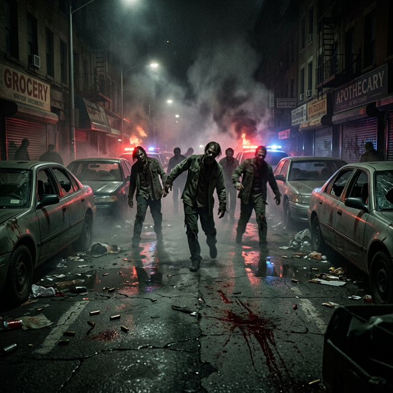

Bagaimana satu vial bocor mengubah 100.000 manusia menjadi ancaman biologis terbesar dalam sejarah.
T-Virus — secara teknis dikenal sebagai Tyrant Virus atau Genome Virus — adalah senjata biologis hasil rekayasa genetika yang dikembangkan Umbrella Corporation selama lebih dari dua dekade. Pada September 1998, eksperimen itu lepas kendali. Dan Raccoon City membayar harganya dengan seluruh nyawa penghuninya.

↑ Jalanan Raccoon City dalam jam-jam pertama wabah — kota yang dulunya ramai berubah menjadi zona kematian.Kebocoran T-Virus pertama terjadi di fasilitas penelitian rahasia Umbrella di bawah pegunungan Arklay pada tanggal 11 Juli 1998. Namun ini bukan insiden yang langsung menghancurkan kota — itu hanyalah peringatan pertama yang diabaikan.
Penyebaran masif ke dalam kota terjadi melalui jalur yang lebih insidius: sistem pengolahan air. Pada malam 24 September 1998, seorang karyawan Umbrella yang tidak teridentifikasi secara sengaja atau tidak sengaja mengontaminasi instalasi pengolahan air kota dengan sampel T-Virus konsentrasi rendah. Dalam waktu 6 jam, virus tersebut telah menjangkau seluruh distrik perumahan melalui pipa air.
Yang paling mengejutkan dari bencana Raccoon City bukanlah virus itu sendiri — tetapi kegagalan total sistem respons darurat. Selama 48 jam pertama, pemerintah kota dan negara bagian masih berusaha menangani situasi sebagai "kerusuhan" biasa. Polisi dikirim tanpa perlindungan yang memadai; ambulans membawa pasien terinfeksi ke rumah sakit yang sudah mulai kewalahan.
Pemerintah federal baru mendeklarasikan darurat nasional dan menutup akses kota pada 29 September 1998 — 5 hari setelah kontaminasi air terjadi. Lima hari yang memungkinkan virus menyebar ke hampir setiap sudut kota.
Pada 30 September 1998, setelah semua opsi lain dinilai tidak feasibel, pemerintah AS membuat keputusan paling kontroversial dalam sejarah negara itu: menghancurkan Raccoon City dengan serangan termonuklir terbatas.
Pada pukul 06:17 pagi waktu setempat, 1 Oktober 1998, sebuah rudal diluncurkan dari pesawat tempur yang mengitari kota. Dalam sepersekian detik, Raccoon City — beserta ribuan orang yang mungkin masih hidup di dalamnya — berhenti ada.